Application mobile adhérent
Déposer vos pièces, suivre vos échéances et retrouver les documents du cabinet, depuis votre téléphone.
Sommaire
- 1Installer et se connecter
- 2Découvrir l'accueil
- 3Déposer une pièce
- 4Suivre vos pièces
- 5Échéances et paiements
- 6Les documents du cabinet
- 7Vos honoraires
- 8Votre déclaration annuelle (DSF)
- 9Votre paie
- 10Mon entreprise
- 11Questions fréquentes
- 12Contacts
À qui s'adresse ce guide ? À vous, adhérent du CGA : commerçant, artisan, dirigeant de PME. Vous n'avez pas besoin de connaître la comptabilité pour vous servir de l'application.
Ce qu'elle fait d'abord : envoyer au cabinet vos factures et reçus en quelques secondes, même sans réseau. Le reste (échéances, documents, honoraires, DSF, paie) vous permet de savoir où en est votre dossier sans téléphoner.
1.Installer et se connecter
Une seule connexion suffit : ensuite, l'application vous ouvre directement votre espace.
Installer l'application
L'application s'installe sur un téléphone Android. Le cabinet vous indique où la télécharger. Une fois installée, elle apparaît sur votre écran d'accueil sous le nom CGA Broad Range.
Recevoir votre accès
Votre accès (votre adresse électronique et un lien pour choisir votre mot de passe) vous est envoyé par courriel dès que votre souscription est réglée. Avant cela, l'application vous montre l'offre du cabinet : vous pouvez la consulter sans compte.
Se connecter
- Ouvrez l'application. Si vous voyez la page de l'offre du cabinet, touchez Se connecter en haut à droite.
- Saisissez votre adresse électronique et votre mot de passe. L'icône en forme d'œil affiche ou masque le mot de passe.
- Touchez Se connecter. Votre accueil s'ouvre.
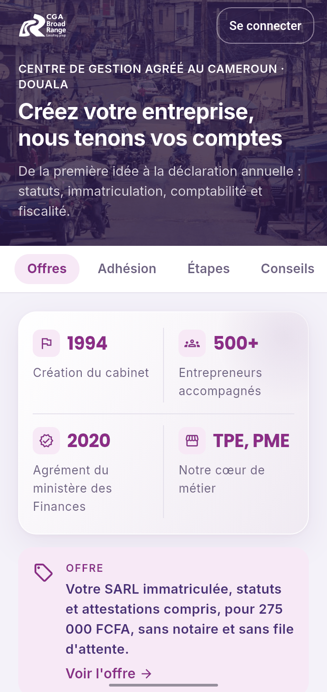
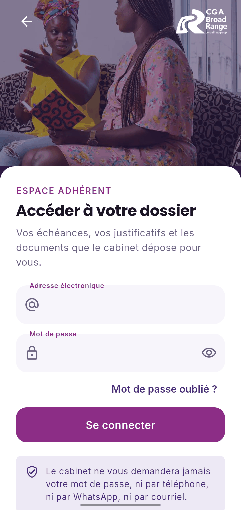
Rester connecté
Vous n'avez rien à cocher : l'application garde votre session sur le téléphone. Les fois suivantes, elle s'ouvre directement sur votre accueil, sans redemander vos identifiants. Si la session a expiré, l'application vous ramène simplement à l'écran de connexion.
Mot de passe oublié
Touchez Mot de passe oublié ?, indiquez votre adresse, puis Recevoir un lien. Si un compte existe à cette adresse, un lien part pour choisir un nouveau mot de passe. Pensez à regarder dans les courriers indésirables. Rien reçu ? Les boutons WhatsApp et Appeler vous mettent en relation avec votre chargé de clientèle, qui vous renvoie un lien.
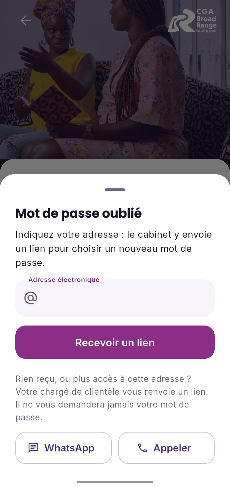
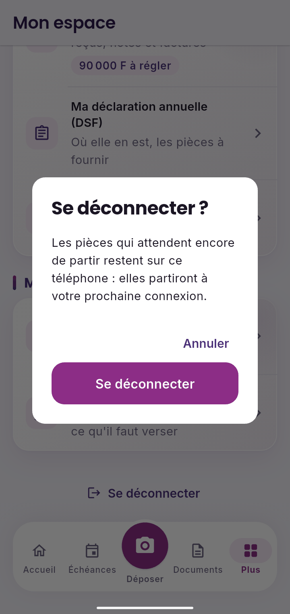
Se déconnecter
Touchez l'icône de sortie en haut de l'accueil, ou Espace puis Se déconnecter en bas de la page. Confirmez. Les pièces qui n'étaient pas encore parties restent sur le téléphone : elles partiront à votre prochaine connexion.
2.Découvrir l'accueil
L'accueil vous dit en un coup d'œil où en est votre mois, et ce que le cabinet attend de vous.
La barre du bas
| Bouton | Ce qu'il ouvre |
|---|---|
| Accueil | Votre tableau de bord (ce chapitre). |
| Échéances | Vos impôts et cotisations, ce qui est en retard et ce qui vient (chapitre 5). |
| Déposer (le grand rond au milieu) | L'appareil photo, en un seul appui, pour photographier une facture (chapitre 3). |
| Documents | Les accusés de dépôt que le cabinet a obtenus pour vous (chapitre 6). |
| Espace | Honoraires, DSF, pièces envoyées, mon entreprise, ma paie, mon compte, déconnexion. |
Ce que montre l'accueil, de haut en bas
- Bonjour, votre nom, le nom de votre entreprise et son numéro de dossier.
- Votre mois : un anneau indique combien de justificatifs du mois le cabinet a reçus (par exemple « 1 sur 4 »), avec une phrase qui dit quoi faire.
- Trois chiffres : les pièces à envoyer (celles que le cabinet attend et auxquelles vous n'avez pas encore répondu), les périodes en retard, les documents déposés. Touchez un chiffre pour aller à l'écran correspondant.
- Déposer une pièce : la grande action violette (chapitre 3).
- Si des honoraires sont à régler, une carte vous le signale et ouvre le paiement.
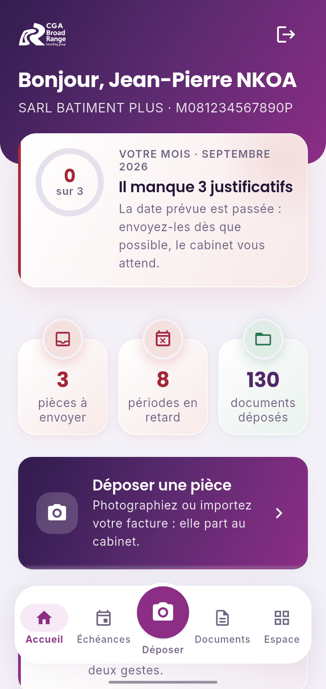
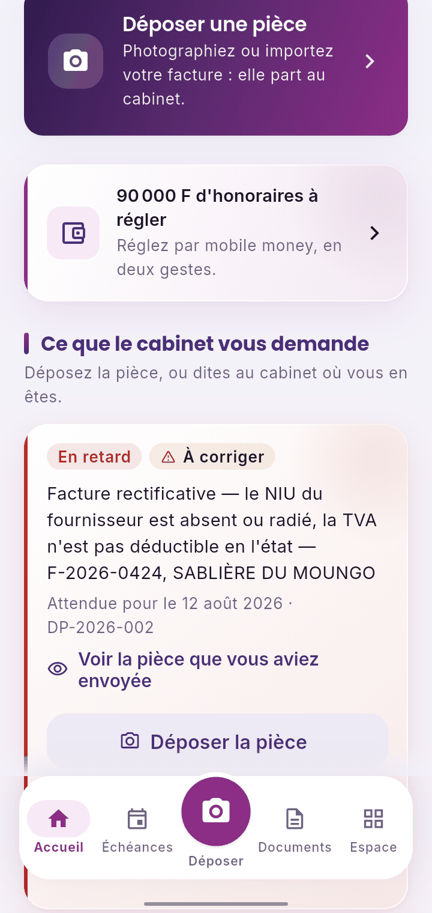
Ce que le cabinet vous demande
Chaque pièce attendue a sa carte : ce qu'il faut, la date prévue, et des étiquettes comme En retard, À corriger ou Nécessaire à la clôture. Sur chaque carte, vous pouvez :
- Déposer la pièce : ouvre les trois façons de l'envoyer (chapitre 3) ;
- répondre Je l'aurai la semaine prochaine ou Je n'ai pas ce document : le cabinet est prévenu, et la carte affiche « Vous avez répondu : ... » ;
- pour une pièce à corriger, Voir la pièce que vous aviez envoyée.
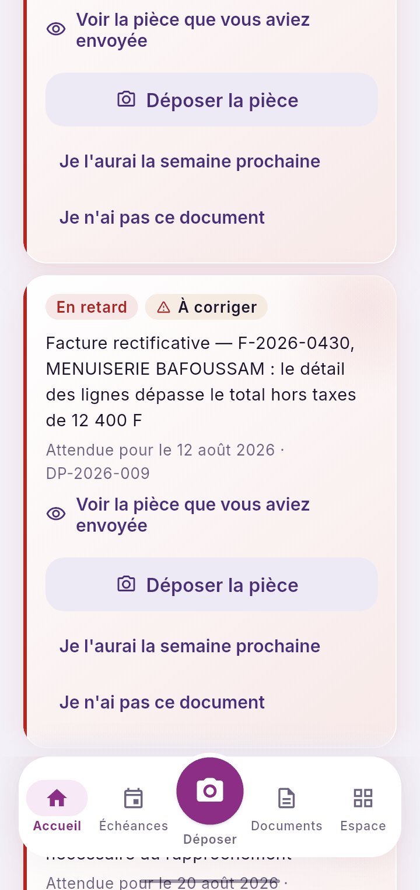
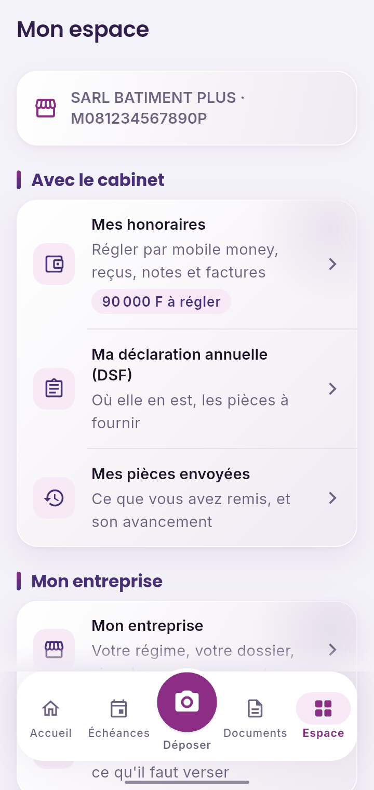
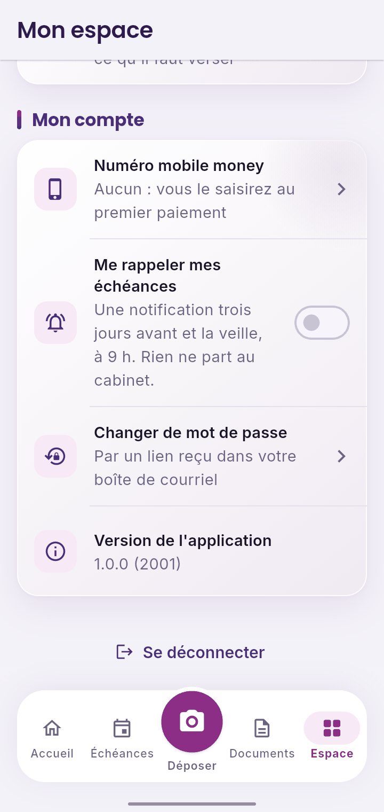
Le bas de l'accueil
- Vos échéances : un résumé (périodes en retard, ou la prochaine échéance). Touchez-le pour ouvrir l'onglet Échéances.
- Déposés pour vous par le cabinet : les deux derniers documents, et Tout voir.
- Raccourcis : Mes pièces (ce que vous avez envoyé), Mon entreprise, et Écrire, qui ouvre WhatsApp vers le cabinet.
Mon compte : rappels, numéro, mot de passe
En bas de l'onglet Espace, la partie Mon compte réunit vos réglages :
- Numéro mobile money : celui que l'application propose à chaque paiement ;
- Me rappeler mes échéances : une notification trois jours avant et la veille de chaque échéance, à 9 h. Le téléphone vous demande une fois l'autorisation d'afficher des notifications. Rien ne part au cabinet ;
- Changer de mot de passe : un lien vous est envoyé par courriel ;
- Version de l'application : à donner au cabinet si vous signalez un problème.
3.Déposer une pièce
Une facture, un reçu, un relevé : prenez-le en photo ou choisissez-le dans votre téléphone. Il part au cabinet tout seul.
Le plus rapide : le bouton « Déposer »
Touchez le grand rond Déposer au milieu de la barre du bas : l'appareil photo s'ouvre directement. Photographiez la pièce bien à plat, en entier, avec assez de lumière. La première fois, Android peut vous demander d'autoriser l'accès à l'appareil photo : acceptez.
Les trois choix
La grande action Déposer une pièce de l'accueil, et le bouton Déposer la pièce d'une pièce demandée, ouvrent une feuille avec trois choix :
| Choix | Quand l'utiliser |
|---|---|
| Photographier | La facture est devant vous, sur papier. |
| Choisir dans la galerie | Vous l'avez reçue en photo, par WhatsApp par exemple. |
| Importer un scan (PDF) | Vous l'avez reçue par courriel, ou scannée au bureau. Le cabinet reçoit le PDF tel quel, toutes ses pages comprises. |
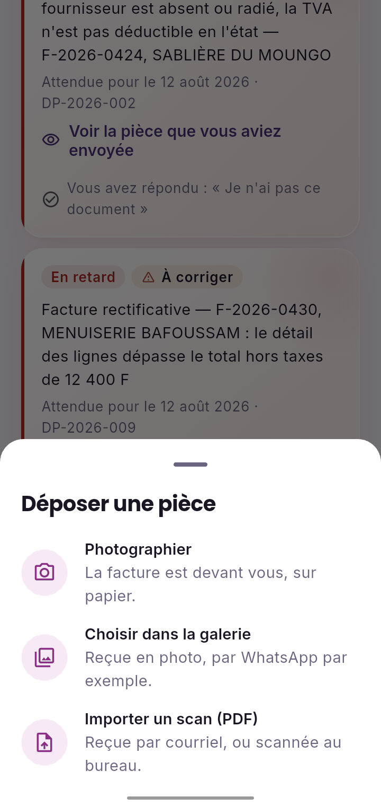
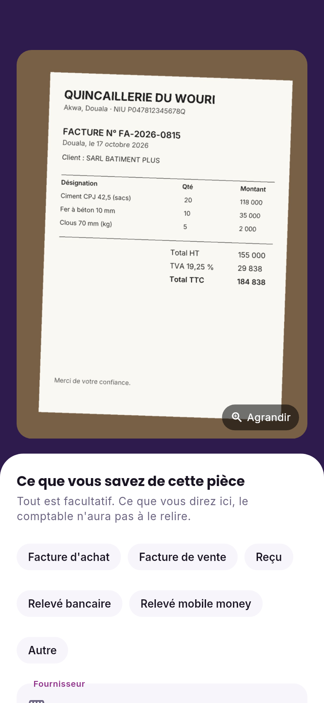
Vérifier avant d'envoyer
Avant de partir, la pièce s'affiche en grand (Vérifier la pièce, ou Vérifier le scan pour un PDF). Si la photo est floue, coupée ou à l'envers, touchez Reprendre la photo (ou Choisir un autre fichier). Sinon, touchez Envoyer la pièce.
« Ce que vous savez de cette pièce »
Sous l'aperçu, un petit formulaire vous permet d'aider le comptable. Tout est facultatif : vous pouvez envoyer sans rien remplir. Ce que vous dites ici, le comptable n'aura pas à le relire.
- La nature : Facture d'achat, Facture de vente, Reçu, Relevé bancaire, Relevé mobile money, Autre ;
- Le fournisseur (le nom change selon la nature : Client pour une facture de vente, Banque, Opérateur) ;
- Le numéro et la date du document ;
- Le montant TTC, en F CFA : le total en bas de la facture, taxes comprises ;
- Un mot pour le comptable, par exemple « Payée en espèces ».
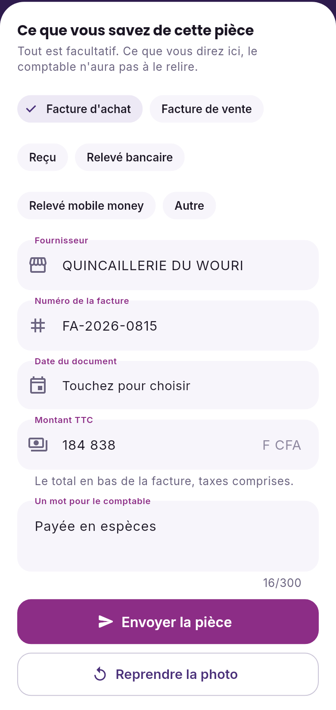
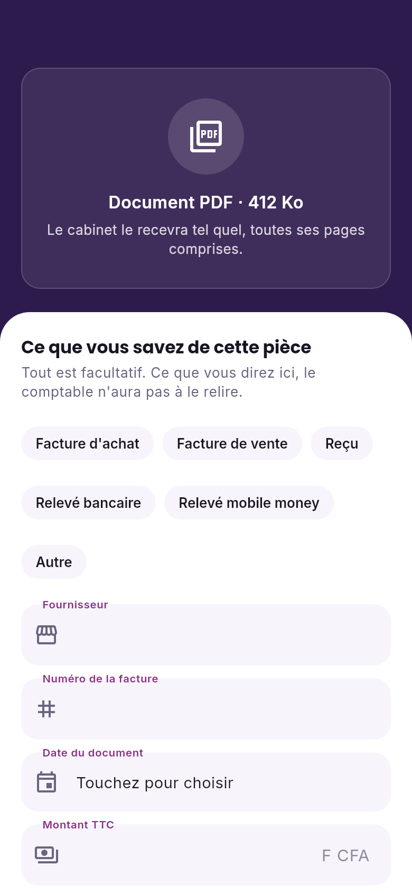
Sans réseau : la pièce part toute seule
Après « Envoyer la pièce », le message « Enregistrée. Elle partira toute seule. » s'affiche. La pièce est gardée sur le téléphone et part dès que le réseau le permet. Vous n'avez rien à refaire.
- L'écran Mes justificatifs (qui s'ouvre après un dépôt) dit « Une pièce attend » ou « 2 pièces attendent », et les liste sous En attente de remise, avec l'heure de la prise.
- Un petit chiffre sur le bouton Déposer indique combien de pièces attendent de partir.
- L'application réessaie régulièrement tant qu'elle est ouverte, et dès que vous y revenez. Pour forcer l'envoi, touchez l'icône de nuage en haut de Mes justificatifs.
- Quand tout est parti, l'écran affiche Tout est parti.
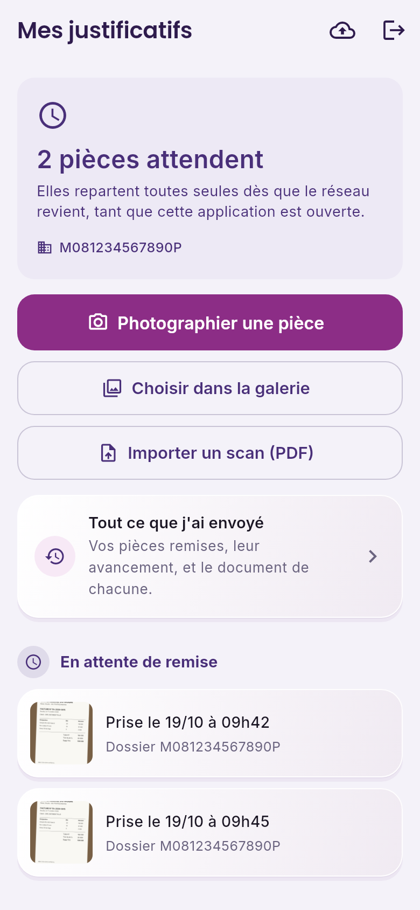
4.Suivre vos pièces
Tout ce que vous avez remis au cabinet, et où il en est.
Ouvrez Espace puis Mes pièces envoyées, le raccourci Mes pièces de l'accueil, ou Tout ce que j'ai envoyé dans Documents. L'écran Mes pièces envoyées s'ouvre :
- en haut, le nombre de pièces au cabinet et combien sont déjà prises en compte ;
- les pièces rangées par mois, avec le fournisseur, le montant, la date et le numéro quand ils sont connus ;
- une barre en cinq étapes montre l'avancement : Reçue par le cabinet, Lue par le cabinet, Rattachée à un paiement, Comptabilisée, Archivée ;
- les pièces arrivées autrement sont signalées : reçue par courriel, par WhatsApp, déposée sur le portail, remise en main propre, relevé importé.
Le champ de recherche trouve une pièce par émetteur, référence ou mois. Touchez une pièce pour revoir le document envoyé.
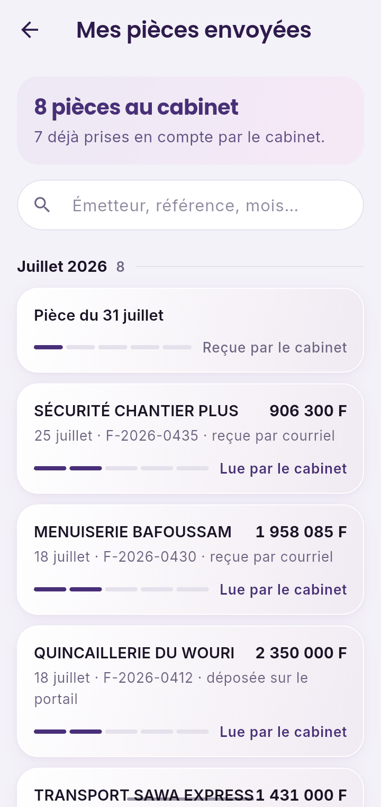
5.Échéances et paiements
Vos impôts et cotisations, période par période : ce qui est en retard, ce qui vient, et comment régler.
Ouvrez l'onglet Échéances. Un bandeau dit combien de périodes sont en retard (ou « Rien en retard »). Puis chaque obligation a sa carte : la période, la date limite, le nombre de jours de retard, et les autres périodes en retard derrière celle-ci. De quoi s'agit-il ? explique l'obligation en mots simples.
Deux façons de régler
| Cas | Ce que vous faites |
|---|---|
| Le cabinet paie pour vous | Quand le cabinet a arrêté le montant, la carte affiche À verser et le bouton Régler par mobile money. Vous payez le cabinet, il paie l'administration et garde la quittance : rien à photographier. Tant que le montant n'est pas arrêté, la carte vous le dit. |
| Vous payez vous-même | Sur le portail de paiement de l'administration, ou à son guichet. Puis touchez J'ai déjà payé : envoyer la quittance : photographiez la quittance ou choisissez-la dans la galerie. Le cabinet la rattache à la déclaration. |
Comment régler cette échéance ? rappelle ces deux voies pour l'obligation choisie. Si le cabinet ne paie pas encore cette obligation pour vous, Le demander au cabinet ouvre WhatsApp.
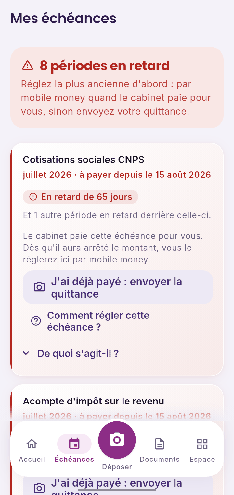
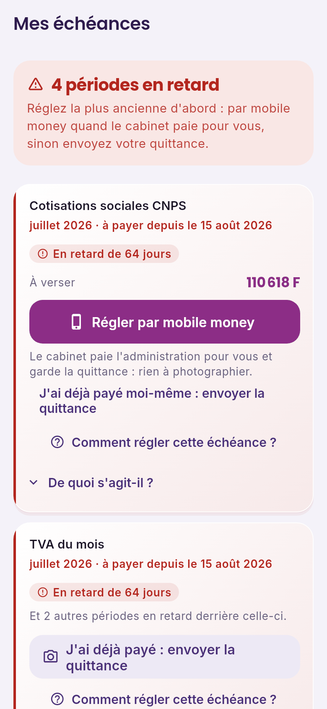
Payer par mobile money
- Touchez Régler par mobile money (ou Payer par mobile money pour les honoraires).
- Saisissez le numéro à débiter (MTN Mobile Money ou Orange Money), neuf chiffres au moins.
- Touchez Envoyer la demande.
- Un message de votre opérateur arrive sur le téléphone : composez votre code secret pour valider.
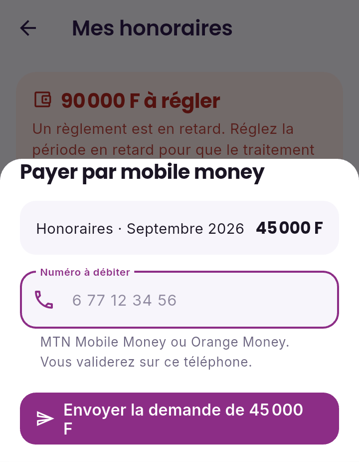
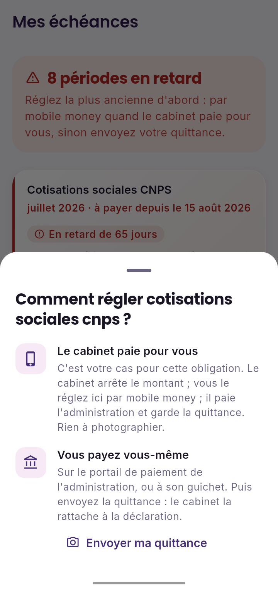
6.Les documents du cabinet
Les accusés de dépôt des déclarations que le cabinet a faites en votre nom.
Ouvrez l'onglet Documents. Chaque accusé indique la déclaration, la période, le guichet (Impôts, CNPS...), la date de dépôt, le montant et le numéro d'accusé. Les accusés sont rangés par année ; le champ de recherche trouve un numéro, une déclaration ou une période.
- Copier le numéro : touchez le numéro (ou l'icône à côté). Il est copié : vous pouvez le coller dans un message. Citez-le si l'administration vous demande la preuve d'un dépôt.
- Voir le reçu : ouvre le reçu de dépôt en PDF dans l'application.
- Partager : l'icône en haut à droite du reçu l'envoie par WhatsApp, courriel ou toute autre application de votre téléphone.
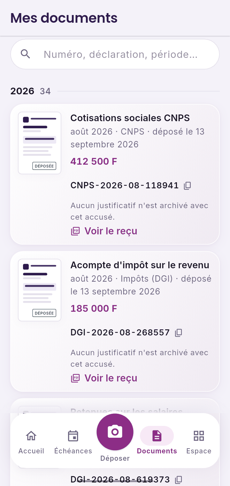
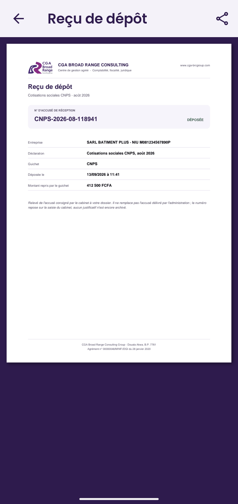
7.Vos honoraires
Ce que vous devez au cabinet, et le moyen de le régler.
Ouvrez Espace puis Mes honoraires (ou la carte des honoraires sur l'accueil). En haut, le montant à régler et votre situation (en règle, en retard, délai accordé, dossier suspendu). Puis les périodes :
- À régler : chaque période avec sa date, son montant, Payer par mobile money et Voir la note d'honoraires ;
- Réglées : les périodes payées, avec leur reçu et leur facture ;
- À venir : les prochaines périodes.
Après un paiement mobile money, la période passe à Réglée dès que l'opérateur l'a confirmé. Vous pouvez aussi régler au cabinet, en espèces ou par virement : la période passe à « Réglée » d'elle-même.
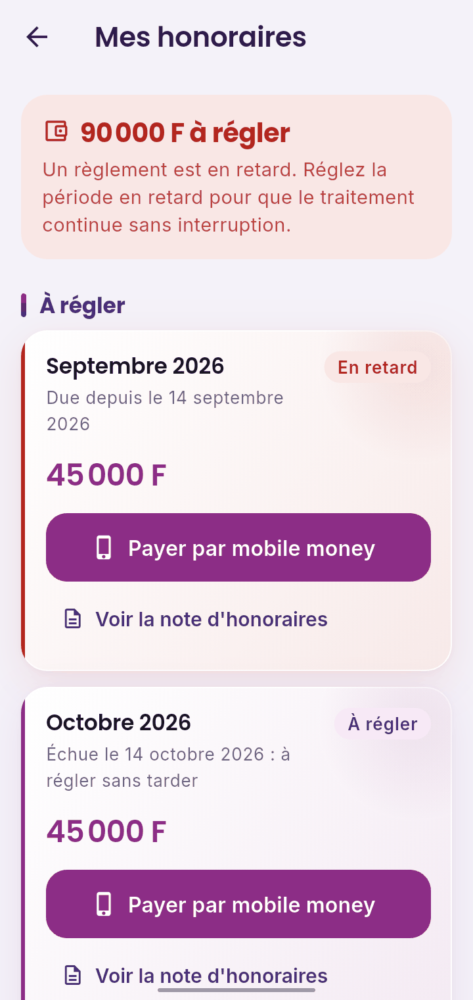
8.Votre déclaration annuelle (DSF)
Après la clôture de l'exercice, le cabinet établit votre déclaration statistique et fiscale et la dépose sur le portail de la DGI.
Ouvrez Espace puis Ma déclaration annuelle (DSF). Chaque exercice montre son avancement en quatre étapes : Préparation, Relecture, Validée, Déposée.
- Vos pièces : le cabinet a besoin de quelques pièces que vous seul détenez. Pour chacune « à fournir », touchez Envoyer la pièce (photo ou galerie). Une pièce déjà reçue peut être remplacée tant que le cabinet ne l'a pas traitée (Remplacer).
- Une pièce ne concerne pas votre entreprise ? Ne la cherchez pas : dites-le au cabinet, qui la marque sans objet.
- Une fois déposée : le numéro d'accusé de la DGI, la date de dépôt, et Voir la copie déposée.
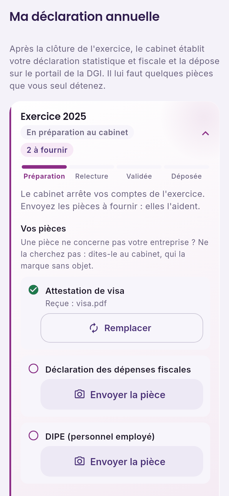
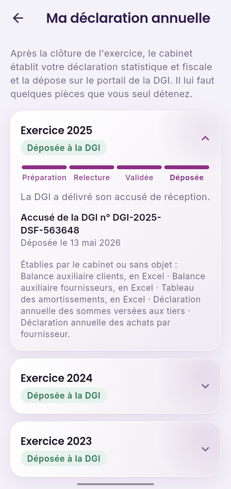
9.Votre paie
Pour les entreprises qui ont des salariés : ce que le cabinet a calculé, mois par mois.
Ouvrez Espace puis Ma paie. Les flèches en haut font passer au mois précédent ou au mois suivant. Pour le mois choisi :
- le total à verser (retenues sur salaires et charges patronales) et la date limite de la déclaration ;
- le nombre de salariés, le total des salaires bruts et la part CNPS ;
- les bulletins : pour chaque salarié, le brut et le net à payer.
Le bouton Régler la CNPS vous mène à l'échéance correspondante (chapitre 5). Touchez un salarié pour ouvrir son bulletin.
Les montants sont calculés par le cabinet, selon les règles en vigueur ce mois-là. Si vous avez embauché et que personne n'apparaît, signalez-le au cabinet (chapitre 10).
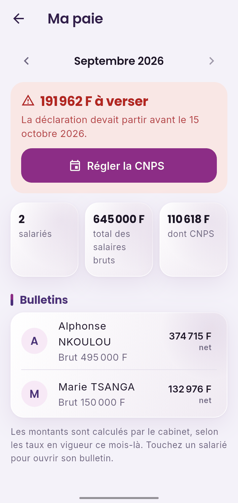
10.Mon entreprise
Votre fiche au cabinet, votre interlocuteur, et le moyen de signaler un changement.
Ouvrez Espace puis Mon entreprise, ou le raccourci de l'accueil. Vous y trouvez :
- Votre régime : régime fiscal, depuis quand, et votre situation pour la TVA, expliquée simplement ;
- Votre dossier : activité, RCCM, siège, centre des impôts, numéro et date d'adhésion, gérant ;
- Votre interlocuteur au cabinet, avec les boutons Appeler et WhatsApp (quand son numéro est connu) et Écrire (un courriel déjà intitulé avec le nom de votre dossier).
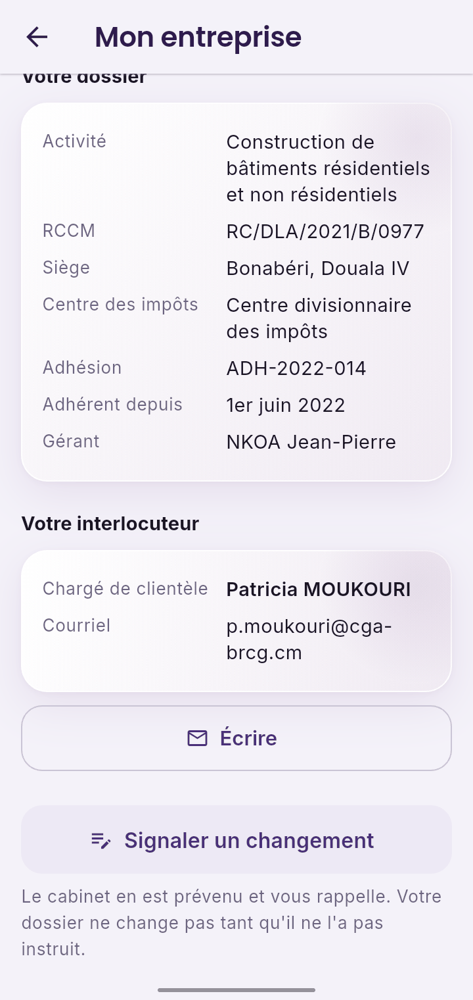
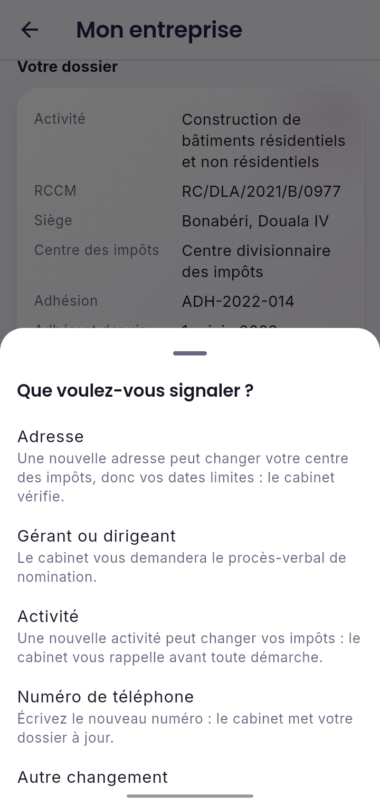
Signaler un changement
- Touchez Signaler un changement.
- Choisissez : adresse, gérant ou dirigeant, activité, numéro de téléphone, ou autre changement.
- Décrivez le changement en quelques mots, puis Envoyer.
Le cabinet est prévenu et vous rappelle. Votre dossier ne change pas tant qu'il n'a pas instruit le signalement. Vos signalements passés sont listés sous « Ce que vous avez déjà signalé ».
11.Questions fréquentes
Le cabinet a refusé ma pièce. Que faire ?
Elle apparaît dans Mes justificatifs, sous À reprendre, avec la raison du refus. Photographiez-la à nouveau. Si le cabinet vous demande une pièce corrigée, une carte À corriger s'affiche sur l'accueil : Voir la pièce que vous aviez envoyée vous montre l'ancienne, Déposer la pièce envoie la nouvelle.
Je n'ai pas de réseau.
Déposez quand même : la pièce est enregistrée sur le téléphone et part toute seule quand le réseau revient, tant que l'application est ouverte ou dès que vous la rouvrez. Les autres écrans (accueil, échéances, documents, honoraires, DSF, paie) montrent sans réseau ce que vous aviez vu la dernière fois, sous un bandeau « Hors ligne · mis à jour il y a… ». Ils se remettent à jour dès que la connexion revient ; tirez l'écran vers le bas ou touchez Réessayer. Si le réseau marche mais que le cabinet ne répond pas, l'écran le dit (« Le cabinet ne répond pas ») : inutile alors de vérifier votre connexion. L'envoi d'une quittance ou d'une pièce de DSF, et les paiements, demandent du réseau.
« Session expirée » : que se passe-t-il ?
Pour votre sécurité, une session finit par expirer. L'application vous ramène à l'écran de connexion : reconnectez-vous avec votre adresse et votre mot de passe. Les pièces en attente ne sont pas perdues : elles restent sur le téléphone et repartent après la connexion. Si un paiement était en cours, recommencez-le.
« Ce fichier dépasse 20 Mo ».
Le fichier est trop lourd pour être envoyé. Envoyez-le en plusieurs parties, ou photographiez directement la facture.
J'ai payé par mobile money, mais rien ne change.
Vérifiez que vous avez bien validé la demande avec votre code secret sur le message de l'opérateur. Juste après la demande, la carte affiche Paiement en attente de validation, et l'application vérifie d'elle-même pendant une trentaine de secondes. La période passe à « Réglée » dès que l'opérateur a confirmé le paiement. Si l'application indique qu'une demande est déjà en cours, validez-la sur votre téléphone.
J'ai plusieurs entreprises.
Le nom de l'entreprise en cours s'affiche en haut de l'accueil et de Mon espace. Touchez-le pour en choisir une autre : tous les écrans suivent ce choix (échéances, documents, DSF, paie).
« Aucun dossier à votre nom ».
Le cabinet n'a pas encore ouvert votre espace. Appelez votre chargé de clientèle.
Un lien (WhatsApp, appel, courriel) ne s'ouvre pas.
L'application copie alors le numéro ou l'adresse : collez-le où vous voulez.
12.Contacts
Pour toute question sur votre dossier, commencez par votre interlocuteur, indiqué dans Mon entreprise. Le cabinet est aussi joignable ici :
CGA Broad Range Consulting Group. Agréé par le ministre des Finances, arrêté n° 00000048 du 28 janvier 2020.
Les écrans de ce guide montrent un dossier de démonstration (SARL BATIMENT PLUS). Les montants, noms et numéros sont fictifs. Certaines vues ont été rendues avec des données d'essai, signalées dans leur légende.